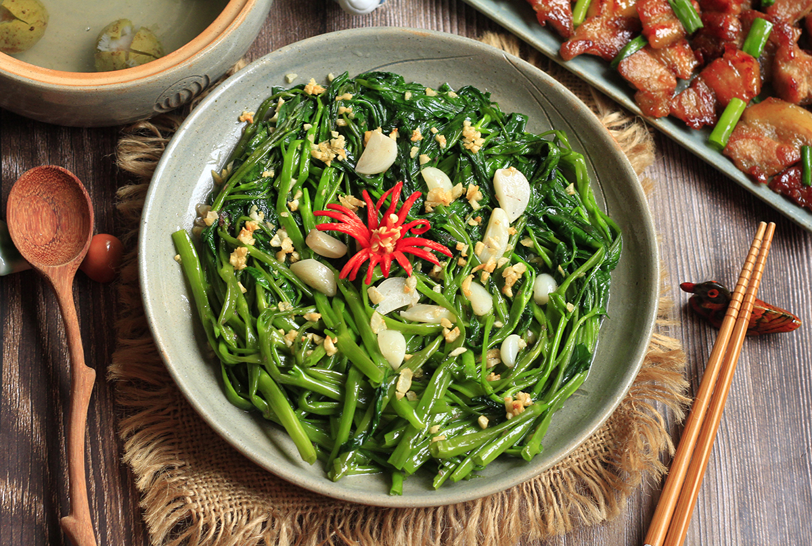
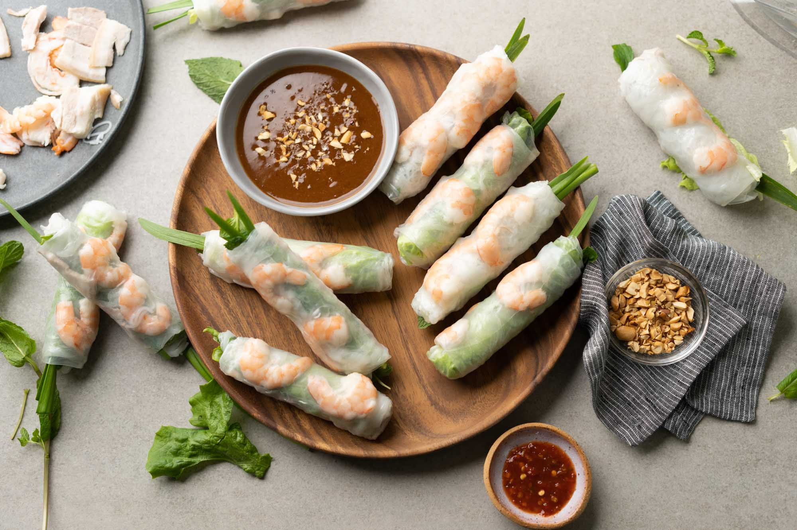
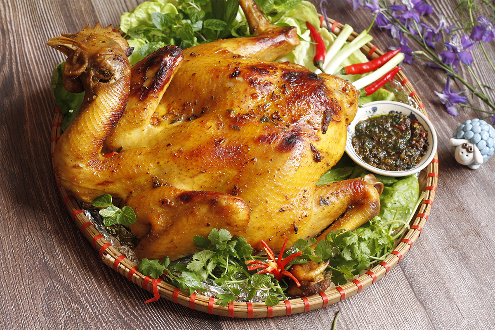

Про кухню В'єтнаму
В’єтнамська кухня відома своїм легким, свіжим і ароматним смаком. Основні інгредієнти включають рис, свіжі трави, рибний соус та лайм. Популярні страви: фо (суп з локшиною та м’ясом), бань мі (сендвіч із хрусткою багетом), та нем (смажені або свіжі ролли). В’єтнамці часто використовують різноманітні зелень і спеції, що додає стравам свіжості.
Виберіть країну

ФоТрадиційний в'єтнамський суп на яловичому або курячому бульйоні з рисовою локшиною, ароматними травами, спеціями та м’ясом.
Фо саоОбсмажена рисова локшина з овочами, м’ясом або морепродуктами, подана з ароматними травами та соусом.
Цао лауТрадиційна страва міста Хойан, що складається з густої локшини, свинини, трав і ароматного бульйону, що робить її особливою.

Бун бо ХюеПікантний суп з яловичини з рисовою локшиною, характерний для центрального В’єтнаму, що містить ароматні спеції та трави.
Бань міВ'єтнамський сендвіч у хрусткій багеті з начинкою з м'яса, маринованих овочів, свіжої зелені та пряного соусу.

Бань сеоХрусткий в'єтнамські млинеці з рисового борошна, начинені свининою, креветками та бобовими паростками, подається зі свіжими овочами.
Бань котМаленькі рисові млинці, хрусткі зовні, з ніжною начинкою з креветок і бобових паростків, подаються зі свіжими овочами.

Бань куонТонкі рисові млинці, фаршировані свининою та грибами, які подаються з рибним соусом і свіжими травами.

Рау муонгОбсмажений водяний шпинат, приправлений часником та соєвим соусом, популярний гарнір у в'єтнамській кухні.

Ном хоа чуойСалат з бананових квітів, м'яса курки або креветок, овочів і ароматних трав, заправлений кисло-солодким соусом.

Бун бо нам боСалат з яловичини та рисової локшини з овочами, зеленню, арахісом і легким кисло-солодким соусом.

СойВ'єтнамська страва з клейкого рису, який зазвичай подається з солодкими або солоними добавками, як-от м’ясо або кокос.
Смажені спринг-ролиХрусткі рулети з рисового паперу, начинені м'ясом, овочами та спеціями, смажені до золотистого кольору.

Свіжі спринг-ролиНесмажені рулети з рисового паперу, наповнені креветками, свининою, свіжими травами та рисовою локшиною, подаються зі соусом.
Ґа танВ'єтнамський курячий суп, який вариться на повільному вогні зі спеціями і травами, має цілющі властивості.

Ґа нюонґСмажена курка, замаринована в спеціях, зазвичай готується на грилі і подається з рисом або овочами.
Ка фе чунґВ'єтнамська кава з яйцем. Збите яйце додається до міцної кави, створюючи насичену кремову текстуру.
Хоа куа дамОсвіжаючий десерт, що складається з екзотичних фруктів, часто з додаванням кокосового молока або льоду.
Бісквітний тортНіжний та повітряний бісквіт, часто ароматизований кокосом або ваніллю, іноді подається з фруктами.

Банановий пудингСолодкий десерт із бананів, кокосового молока та тапіоки, має кремову текстуру і тропічний аромат.